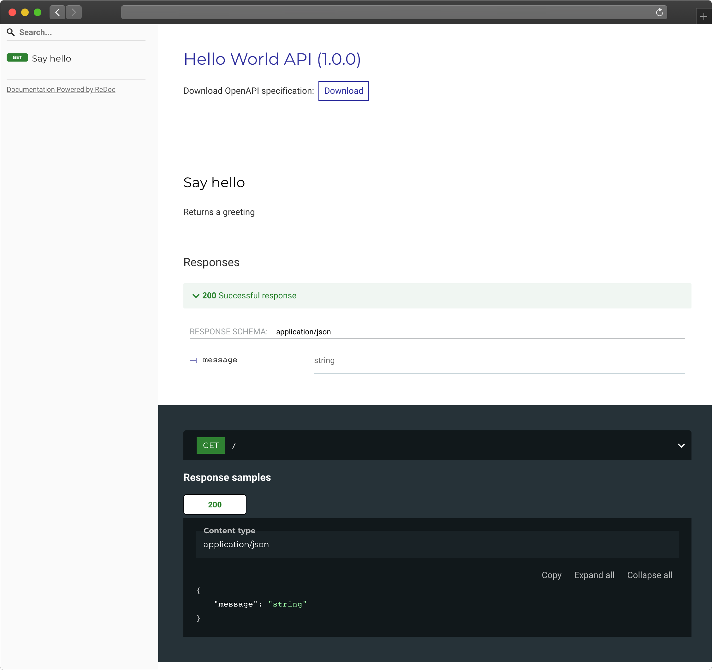

class: center, middle, title <h1 style="font-size: 80px;">Opening APIFlask</h1> <!-- <h3 style="margin-bottom: 250px; color: lightgrey">OpenAPI Practice with Python</h3> --> ÊùéËæâÔºàGrey LiÔºâüçØ ‰ª£Á†ÅÂé®ÊàøºÄÊ∫êÊùæ x PyCon China 2024 --- class: middle ## ÊùéËæâ / Grey Li * Author of *Python Web Development with Flask* * Flask/APIFlask Maintainer * Microsoft MVP in Python Category * Senior Software Engineer at Dell <small>Find more at [greyli.com](https://greyli.com)</small> --- class: middle, center <img src="./images/flask-logo.png" width="600px"> .footnote[ https://palletsprojects.com/p/flask ] --- class: middle, center <img src="./images/apiflask-logo.png" width="700px"> .footnote[ https://apiflask.com ] --- ## HelloWrold API (Flask) ```bash $ pip install flask ``` ```python # app.py from flask import Flask app = Flask(__name__) @app.get('/') def hello(): return {'message': 'Hello!'} ``` ```bash $ flask run ... * Running on http://127.0.0.1:5000/ (Press CTRL+C to quit) ``` --- ## HelloWrold API (APIFlask) ```bash $ pip install apiflask ``` ```python # app.py from apiflask import APIFlask app = APIFlask(__name__) @app.get('/') def hello(): return {'message': 'Hello!'} ``` ```bash $ flask run ... * Running on http://127.0.0.1:5000/ (Press CTRL+C to quit) ``` --- ## PetStore API Example ```python from apiflask import APIFlask, Schema, abort from apiflask.fields import Integer, String from apiflask.validators import Length, OneOf app = APIFlask(__name__, title='PetStore API', version='1.0.0') pets = [ {'id': 0, 'name': 'Kitty', 'category': 'cat'}, {'id': 1, 'name': 'Coco', 'category': 'dog'} ] class PetIn(Schema): name = String(required=True, validate=Length(0, 10)) category = String(required=True, validate=OneOf(['dog', 'cat'])) class PetOut(Schema): id = Integer() name = String() category = String() ``` --- ## Get a Pet ```python @app.get('/pets/<int:pet_id>') @app.output(PetOut) def get_pet(pet_id): if pet_id > len(pets) - 1: abort(404) # you can also return an ORM/ODM model class instance directly # APIFlask will serialize the object into JSON format return pets[pet_id] ``` --- ## Update a Pet ```python @app.patch('/pets/<int:pet_id>') @app.input(PetIn(partial=True)) # -> json_data @app.output(PetOut) def update_pet(pet_id, json_data): # the validated and parsed input data will # be injected into the view function as a dict if pet_id > len(pets) - 1: abort(404) for attr, value in json_data.items(): pets[pet_id][attr] = value return pets[pet_id] ``` --- ## OpenAPI Spec Generation https://localhost:5000/openapi.json ```json { "openapi": "3.0.0", "info": { "version": "1.0.0", "title": "PetStore API" }, "paths": { "/pets/{pet_id}": { "get": { "summary": "Get a pet", "responses": { "200": { "description": "Successful response", "content": { "application/json": { "schema": { "$ref": "#/components/schemas/PetOut" ... } ``` .footnote[ https://spec.openapis.org/oas/v3.0.0 ] --- ## OpenAPI Documentation https://localhost:5000/docs  .footnote[ Redoc: https://github.com/Redocly/redoc ] --- ## And More... * Request/Response validation with automatic error messages * Error handling with automatic JSON respsonse * Authentication support with Flask-HTTPAuth * Compatibility with Flask extensions --- ## Sprint 6 Tasks * https://codekitchen.community/t/topic/1355 üìçRead contributing guide first: https://apiflask.com/contributing/ --- class: center, middle, inverse # Q&A